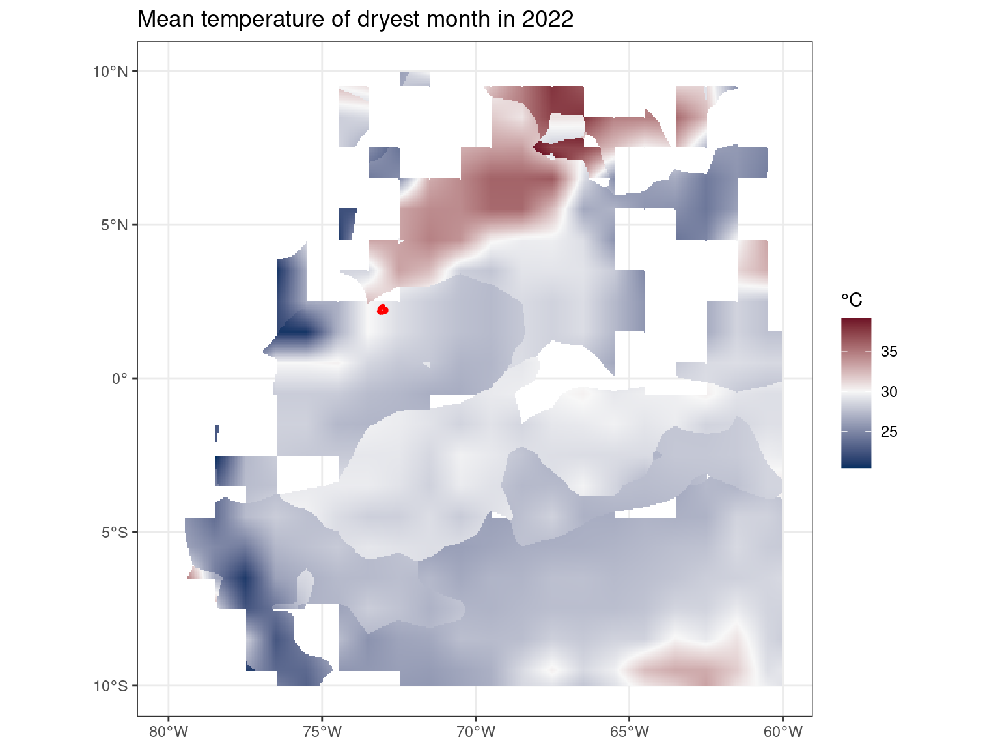
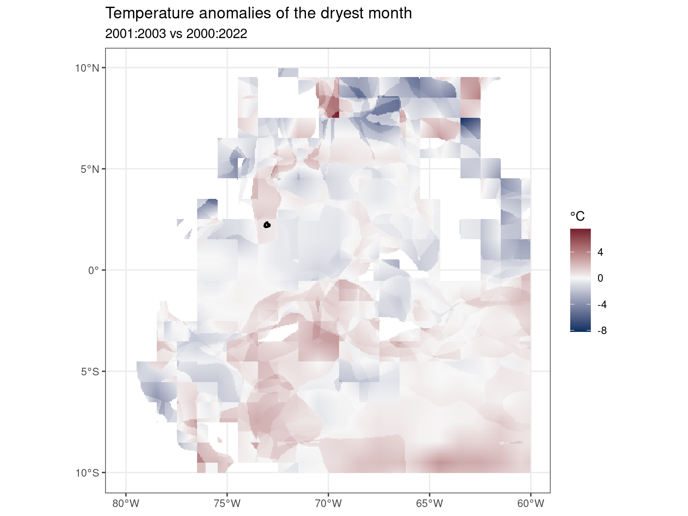
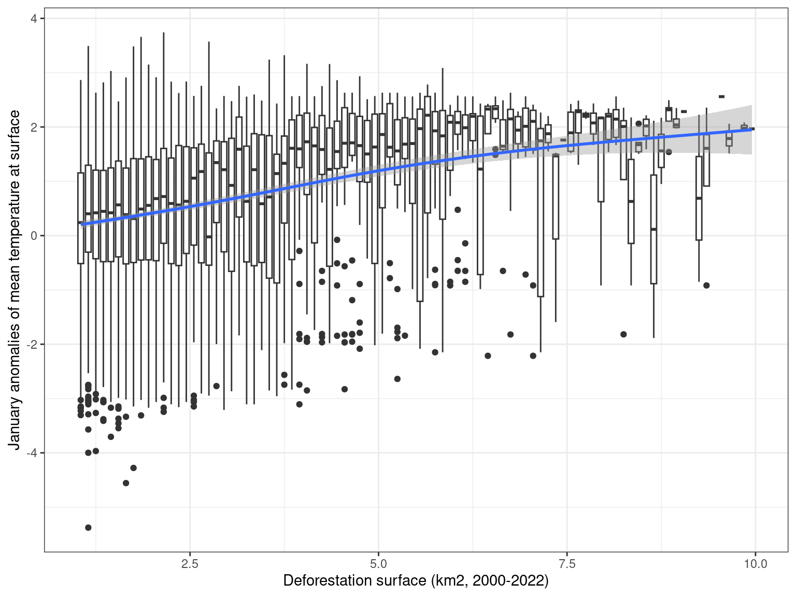

Temperature
Following Butt et al. (2023), we used land surface temperature (LST) data from MOD11A2 version 6 MODIS 8-d LST data at 0.01-degree resolution grid. We excluded data where the estimated emissivity error was greater than 0.02 and where the LST error was greater than 1 K. Extensive cloud cover can reduce the spatial and temporal availability of satellite data. For this reason, we focus our analysis on the dry season when there is less cloud cover. We thus worked with January the driest month in Guiavare. Dry season surface temperature changes were then calculated by comparing temperature of the driest month for two periods at the end (2018 to 2020) and start (2001 to 2003) of the study period. Using 3-y averages reduces the influences of climate variability. We computed variations in mean temperature (tas). Monthly or seasonal indices could be used at a later stage, but we must be wary of seasonal variations across space. Daily extrema could also be used.


Comparisons
Comparing deforestation surfaces to climate anomalies seems to indicate an increase in temperature with increasing deforestation surfaces. But caution should be taken because of possible spatial proximity between deforested pixels that could confound with the spatial structure of climate anomalies.

Linear regressions
Classic linear regression without accounting for spatial autocorrelation found a general and significant increase in temperature (+0.19°C) and a significant increase in temperature (+0.52°C) with deforestation. However, inspecting models residuals revealed a significant spatial autocorrelation of model errors up to several hundred of kilometres questioning the robustness of the results.
| tas | |||
| Predictors | Estimates | CI | p |
| intact | 0.19 | 0.19 – 0.20 | <0.001 |
| deforest | 0.52 | 0.47 – 0.57 | <0.001 |
| Observations | 14050 | ||
| R2 / R2 adjusted | 0.239 / 0.239 | ||

Spatial regressions
To account for spatial autocorrelation, we took advantage of a method including spatial autocorrelation in model error (spNNGP, Gaussian univariate Bayesian spatial regression models using Nearest Neighbor Gaussian Processes, see note below). We found no significant effect of deforestation on temperature accounting for spatial autoccorelation.


Spatial methods
We explored multiple tool and methods to account for spatial autocorrelation in the regression. Below are listed the different options and the rational of the choice.
- spautolm from spatialreg based on neighbours of dnearneigh from spdep
- this method is based on CAR (could be SAR)
- neighbourhood is defined using the regular matrix based on distance: ‘dnearneigh(data_test[c(“x”, “y”)], 0, 10, longlat = T)’
- neighbourhood can be plotted: ‘plot(data_adj, data_test[c(“x”, “y”)])’
- the regression is straightforward: ‘spautolm(formula, data, listw = nb2listw(data_adj, zero.policy = TRUE), family = “CAR”)’
- the tool quickly saturated RAM, depending on both the number of observation (1,000 start to block) and the number of neighbours per observation (10,000 for 10km)
- icar from brms with manual build of distance matrix
- this method is based on CAR (other available)
- distance matrix can be computed as follow: ‘distances <- as.matrix(dist(data_test[c(“x”, “y”)])*(1/0.01)); W <- array(0, c(N, N)); W[distances <= 10] <- 1’
- brms can take advantage of within chain parralelisation, does not overload memory, but might be slow and have convergence issue
- the regression is straightforward: ‘brm(formula + car(W, type = “icar”), data = data_test, data2 = list(W = W), cores = 20)’
- spNNGP from spNNGP
- Gaussian univariate Bayesian spatial regression models using Nearest Neighbor Gaussian Processes
- neighbourhood does not need to be defined
- does not overload memory and is very fast (can still take a few minutes for a whole dataset of 15,000 observations)
- the regression is less straightforward, see code above
- the model only use one chain and post-warmup convergence is questionable despite high acceptance rate
- CAR can be manually implemented in stan using multi_normal_prec but seems very slow